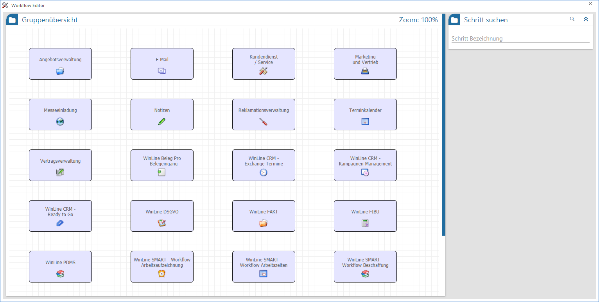
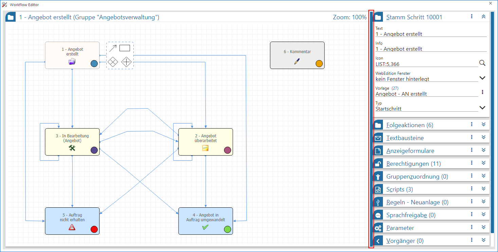
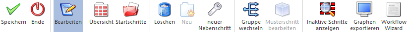
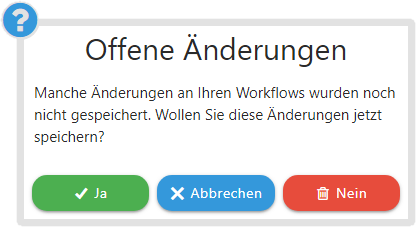
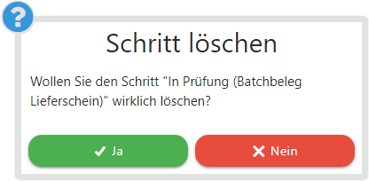
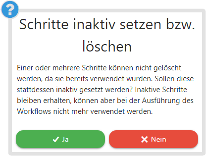
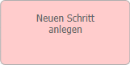
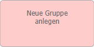
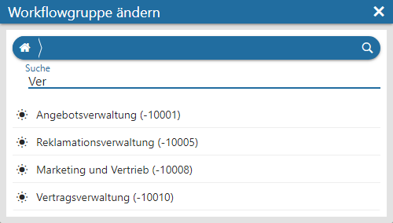
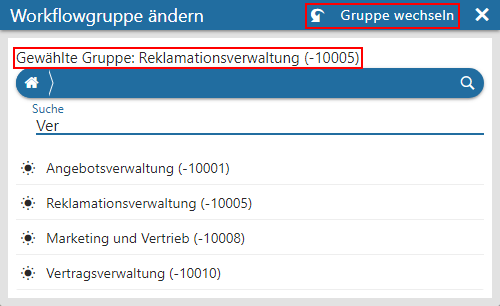

Mit Hilfe des Graphen-basierenden Workflow Editors, welcher über den Menüpunkt…
1 WinLine INFO
1 CRM
1 Workflow Editor
… aufgerufen wird, können neue CRM-Workflows (Ablauf der einzelnen Prozesse im Unternehmen), d.h. einzelne Workflowschritte bzw. Aktionsschritte, angelegt, sowie bereits bestehende Workflows oder Aktionsschritte bearbeitet werden.
Das Design bzw. die Farbgebung des Workflow Editors ist hierbei abhängig von der Einstellung des HTML-Designs, welches in der WinLine START (Parameter - Einstellungen… - Register "Design" - Bereich "Html Design") festgelegt werden kann.
Hinweis
Standardmäßig wird der Workflow Editor in einem "Lesemodus" geöffnet, d.h. es können bestehende CRM-Prozesse aufgerufen und kontrolliert werden, ein Ändern bzw. eine Neuanlage ist nicht möglich. Hierfür muss zunächst mit Hilfe des Buttons "Bearbeiten" der "Bearbeitungsmodus" aktiviert werden.

Der Workflow Editor ist in 2 Hauptbereiche unterteilt, welche in den nachfolgenden Kapiteln detailliert beschrieben werden:
ü Der Graph
Im linken Bereich des
Editors befindet sich die grafische Übersicht, welche auch "Graph" genannt wird.
Neben der Anzeige der einzelnen Prozessbestandteile dient der Graph als Werkzeug
zur Überarbeitung und Neuerstellung von CRM-Prozessen (Workflows).
ü Definitionsbereich / Suche
Im
rechten Bereich des Editors steht abhängig von der aktuellen Ansichtsebene des
Graphen eine Suche oder folgende Definitionsbereiche zur Verfügung:
ü Stamm
ü Scripts
ü Regeln
ü Nebenschritt: Nicht ausführen nach
Hinweis
Die beiden Bereiche können mittels Splitter vergrößert bzw. verkleinert werden.

Buttons

Ø Speichern
Durch Anwahl des Buttons "Speichern" bzw. der Taste F5 können die durchgeführten Änderungen bzw. Neuanlagen gespeichert werden.
Hinweis
Nicht gespeicherte Änderungen werden über ein * und nicht gespeicherte Neuanlage mit einem + gekennzeichnet.

Ø Ende
Mit dem Button "Ende" bzw. der Taste ESC kann das Fenster geschlossen werden. Sollten nicht gespeicherte Änderungen vorhanden sein, so erscheint die folgende Sicherheitsabfrage:

ü
Alle nicht gespeicherten Änderungen
werden gespeichert und der Workflow Editor geschlossen.
ü
Das Fenster "Offene Änderungen" wird
geschlossen und der Workflow Editor bleibt geöffnet.
ü
Alle nicht gespeicherten Änderungen
werden verworfen und der Workflow Editor geschlossen.
Ø Bearbeiten
Standardmäßig wird der Workflow Editor in einem "Lesemodus" geöffnet, d.h. es können bestehende Workflows aufgerufen und kontrolliert werden, ein Ändern bzw. eine Neuanlage ist nicht möglich. Hierfür muss zunächst mit Hilfe des Buttons "Bearbeiten" der "Bearbeitungsmodus" aktiviert werden.
Ø Übersicht
Durch Anwahl des Buttons "Übersicht" wird im Graphen auf die Ansicht / Darstellung aller Workflowgruppen gewechselt. Der Button ist daher nicht aktiv, wenn die Übersicht der Workflowgruppen bereits dargestellt wird.
Ø Startschritte
Dieser Button ist nur aktiv, wenn der komplette Workflow dargestellt wird. Bei Anwahl des Buttons wird in die Übersicht aller Startschritte - und Aktionen der Gruppen des aktuellen Workflows gewechselt.
Ø Löschen
Mit diesem Button können die aktuell ausgewählten Workflow-Objekte (Schritte, Kanten, etc.), nach Bestätigung der folgenden Sicherheitsabfrage, gelöscht werden.

ü
Die gewählten Objekte werden
gelöscht.
ü
Das Fenster "Schritte löschen" wird
geschlossen und das Löschen nicht durchgeführt.
Hinweis
Handelt es sich bei dem zu löschenden Objekt um den Start oder das Ende eines "XOR"- bzw. "AND"-Blocks, so werden (nach der Sicherheitsabfrage) alle Bestandteil des Blocks entfernt. Dieses betrifft auch alle im Block befindlichen Schritte, sowie weitere "XOR"- bzw. "AND"-Blöcke.
Achtung
Wenn mit dem zu löschenden Objekt bereits CRM-Fälle erfasst wurden, dann kann dieses nicht gelöscht werden! Hierauf wird durch eine separate Meldung hingewiesen und ein "Inaktiv setzen" angeboten.

ü
Das gewählten Objekte wird inaktiv
gesetzt. Hierbei werden alle Kanten entfernt und die Berechtigungen gelöscht.
ü
Das Fenster "Schritte inaktiv setzen"
wird geschlossen und das Löschen nicht durchgeführt.
Hinweis
Nachdem das "endgültige" Löschen eines Objektes beim Speichern des Workflows (mittels OK-Button) erfolgt, kann u. U. in der Zeit zwischen Löschen und Speichern ein CRM-Fall (CRM-Schritt) geschrieben werden. Daher ist darauf zu achten, dass in der Zeit zwischen "gewolltem" Löschen und Speichern der Änderung, kein, auf das zu löschende Objekte bezogener, CRM-Schritt geschrieben wird!
Ebenso können Workflow-Gruppen nicht gelöscht werden, wenn diese noch Workflow-Schritte beinhalten.
Ø Neu
Mit dem Button "Neu" können neue Workflow-Gruppen, bzw. neue Startschritte oder Aktionsschritte angelegt werden. Welches Objekt durch Anwahl des Buttons angelegt wird, ist abhängig von der aktuellen Ansichtsebene in der grafischen Übersicht. D.h. wird die Gruppenübersicht angezeigt, so können neue Workflow-Gruppen angelegt werden, wird die Übersicht der Startschritte angezeigt, so können neue Start-, bzw. Aktionsschritte erzeugt werden.
Hinweis
Eine Neuanlage ist auch durch Anwahl der folgenden Objekte innerhalb des Graphen möglich.


Ø neuer Nebenschritt
Befindet man sich innerhalb eines Workflows, so können mit Hilfe des Buttons "neuer Nebenschritt" neue Workflow-Nebenschritte angelegt werden. Der Unterschied zur Verwendung der Funktion "in Nebenschritt umwandeln" ist jener, dass bei der Neuanlage über diesen Button die Definition des Schrittes mit den "Standardwerten" vorbelegt werden (die Bereiche Berechtigungen und Sprachfreigabe stammen komplett vom Startschritt übernommen; innerhalb des Bereichs Anzeigeformulare stammen wiederum die Felder "Haupt-PDF" und "Sub-PDF" aus dem Startschritt; die Folgeaktionen werden mit 4 Standard-Aktionen vorbelegt).
Ø Gruppe wechseln
Liegt der Fokus auf einem Startschritt, so kann durch Anwahl dieses Buttons der gesamte CRM-Prozess (d.h. der Startschritt mit all seinen Folge-, Neben- und Endschritten) in eine andere Workflow-Gruppe verschoben werden. Hierfür wird zunächst das Fenster "Workflowgruppe ändern" geöffnet, in welchem die neue Gruppe gewählt werden kann.

Nachdem eine neue Gruppe ausgewählt wurde, wird diese im Kopf des Fensters angezeigt und der Button "Gruppen wechseln" zur Verfügung gestellt. Durch dessen Anwahl findet der Wechsel abschließend statt.

Achtung
Ein Gruppenwechsel wird direkt ausgeführt und gespeichert!
Ø Musterschritt bearbeiten
Dieser Button ist nur verfügbar, wenn ein Schritt ausgewählt wird, der von einem Musterschritt abgeleitet wurde bzw. mit diesem verknüpft ist. Durch Anwahl des Buttons wird auf den verknüpften Musterschritt gewechselt.
Hinweis
Bei dem Musterschritt wird im Definitionsbereich der folgende Bereich zusätzlich dargestellt. Über diesen kann in den Ausgangsworkflow zurückgewechselt werden.
Ø Inaktive Schritte anzeigen
Im Standard werden inaktive Schritte im Workflow Editor ausgeblendet, d.h. nicht angezeigt. Ist eine Anzeige gewünscht, so muss zunächst mit Hilfe des Buttons "Inaktive Schritte anzeigen" der entsprechende Modus aktiviert werden.
Hinweis
Über das Menü des Bereichs Stamm können inaktive Schritte wieder aktiviert werden.
Ø Graphen exportieren
Mit diesem Button kann die grafische Übersicht des aktuellen CRM-Prozesses (d.h. der linke Bereich des Fensters) exportiert werden. Dazu öffnet sich der "Datei speichern"-Dialog in welchem Speicherort und Dateiname vergeben werden können. Die Datei wird anschließend im Format "svg" (Scalable Vector Graphics) gespeichert.
Hinweis
Der Button ist nur aktiv, wenn ein Workflow bzw. ein Aktionsschritt (im linken Bereich des Fensters) dargestellt wird.
Ø Workflow Wizard
Dieser Button ist nur aktiv, wenn ein Startschritt ausgewählt wurde. Durch Drücken des Buttons wird in den Workflow Wizard gewechselt und der Workflow zum Bearbeiten vorgeschlagen.